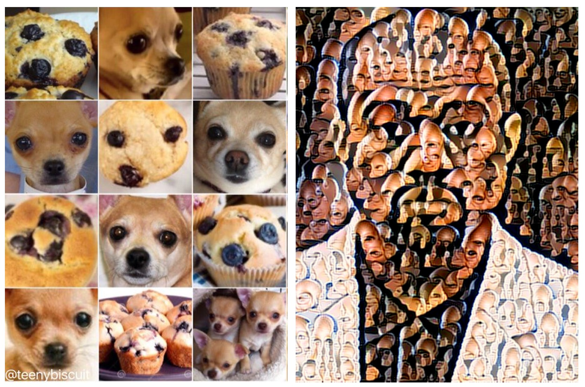
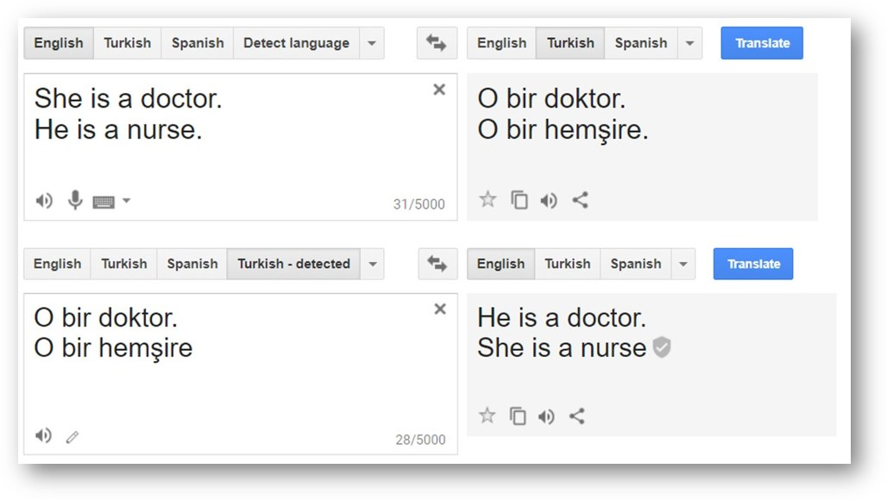
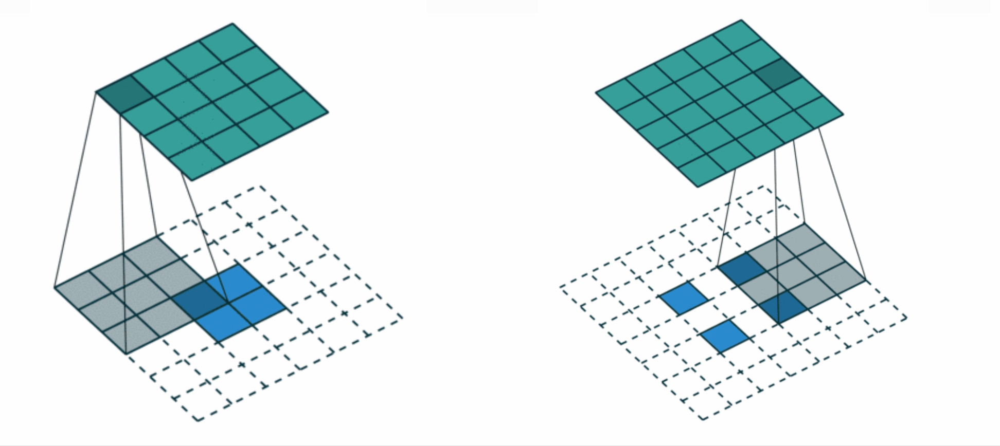
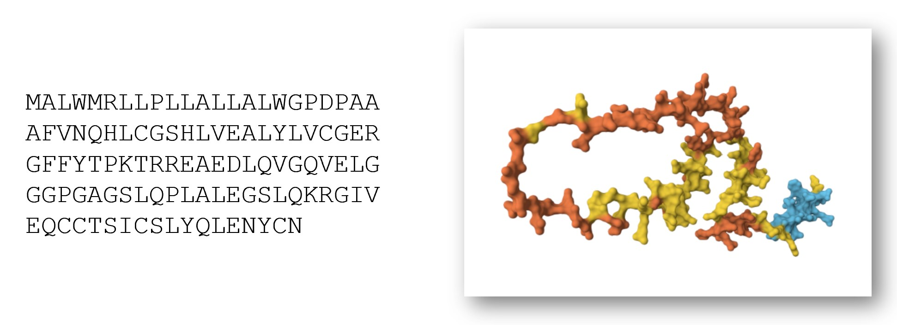
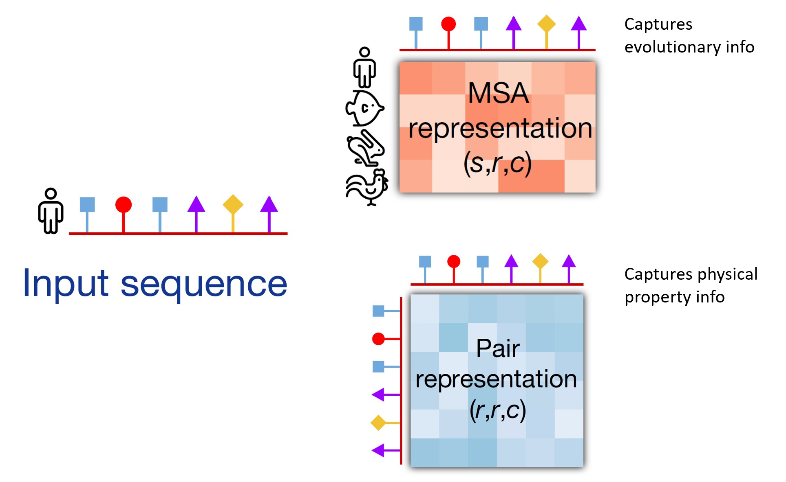

This post can stand alone as a friendly introduction to neural nets, no background required. It is part 2 in my series on using AI to figure out what T cells can bind to. Here are part 1 and part 3.
What are Neural Networks?
Neural networks are a type of machine learning algorithm that are currently in the limelight, powering chatbots like ChatGPT and image generators like Midjourney. Neural networks are just math equations, written in computer code. When people hear the terms “neural networks” or “artificial intelligence,” they may picture humanoid robots, but it is more accurate to imagine a scaled-up version of 10th grade math class.
When considering an AI system, two major categories of tasks are:
- Classifying things: These are not predictions in the sense of predicting the future, but rather, guessing the answer to a question. Is this a picture of a chihuahua or a blueberry muffin? Which of these potential drugs would be most likely to target antibiotic resistant bacteria?
- Generating things: Create a picture of Kanye West made out of tiny Captain Picard faces. Generate a new molecule that may work as an antibiotic.

Some problems in medicine and immunology can be framed either as a classification problem OR as a generative problem. For instance, suppose your goal is to produce a new antibiotic to address antimicrobial resistance. Some scientists are trying to classify which compounds, out of hundreds of millions of existing ones, may have the desired properties, whereas others are trying to generate new compounds. Both approaches are useful.
Language Models
You may have heard the term “language model” describing chatbots (such as Chat-GPT or Claude) and automated language translation (such as Google Translate and Skype Translator). One approach to developing sophisticated language capabilities is to write a computer program that predicts the next word in a sentence. Predict the next word and then the next, and you can generate strings of text. This is a language model. Both prediction and generation are used to build language models.

Along the way, the model has learned a number of patterns regarding context, vocabulary, and relationships. Fine tuning lets us use these capabilities for specific problems. For instance, a language model trained on medical chart notes was used to make predictions about which patients were most likely to be readmitted to the hospital. While the model was trained on a prediction task (predicting the next word in a sentence), it can now be used for generation as well when combined with some additional techniques when it is given additional instructions and training from humans.
When language models are trained, they are not always just tasked with predicting the next word. In a sentence, sometimes random words are covered up, and the computer must predict what goes in that spot. It is a fill-in-the-blank assignment.
Through predicting words, the model can learn which other words to focus on. Suppose I told you, “I am so tired that I can barely keep my XXXX open”. You could likely guess that the missing word is “eyes”. To do so, you may have focused on “tired” and “open”. Some of the word positions add little, if anything, to your efforts of deduction. In a similar way, attention-based neural networks learn what to pay attention to, where to focus.
Like the sequence of words in a novel, a sequence of amino acids is its own language, telling the story of a protein. The same techniques and approaches that were developed for natural languages (such as translating between English and French) can also be applied to the biological language of protein creation.
Popular architectures
Neural networks are often created from a few popular architectures, which are particular combinations of mathematical operations. Something that can be confusing is that different architectures can often be combined with one another. Also, most of these architectures can be used for both predictive and generative problems. Here are a few particularly popular ones:
- Multi-Layer Perceptrons (MLPs): the oldest example of a neural network was developed in the 1960s! It is the basis of many systems used today (Rosenblatt 1962).
- Convolutional Neural Networks (CNNs): are like a filter that you scan across a picture, inch by inch, to recognize what is in it. This is useful for programs such as those bird-watcher apps that will tell you what type of bird you spotted, based on the photo you upload (Lecun et al. 1998; Krizhevsky et al. 2012).
- Recursive Neural Networks (RNNs): can take variable-length input (that is, sequences) and store state. Google began using these for translating between languages in 2016 (Hochreiter and Schmidhuber 1997; Wu et al. 2016).
- Transformers: offer a more efficient approach for sequences, which can be any length. These are based on attention, as explained above. These have now replaced RNNs in many applications, including Google Translate, which lets a user enter a word or phrase, or even entire paragraphs, and get back the response in another language (Vaswani et al. 2017).
- Graph Neural Network (GNNs): Allow for geometric relationships in the input to be captured. For example, GNNs can help represent the spatial relationships between different amino acids in a sequence. Principles of GNNs are typically combined with other options in the list above (Scarselli et al. 2009; Micheli 2009).

How do you choose a neural network for your problem? One key consideration is how much the size of your input varies. Suppose you have a collection of photos and are trying to determine which are of cats and which are of dogs. Your photos are likely of similar sizes, and you can make them the same by adding a frame around the smaller ones. Whole families of neural networks have been developed for such problems with fixed-size input.
Now suppose you are developing a neural network that can read books and predict which word will come next. The difference in length between The Hungry Hungry Caterpillar and Les Miserables is huge. For this problem, we need a network that allows variable-size input. RNNs and Transformers allow variable-length input, whereas CNNs take fixed-size input.
The Innovation of AlphaFold
Recall from Part 1 of this series that the computer program AlphaFold revolutionized the task of taking a 1D sequence of amino acids (shown on the left), and transforming it into a 3D molecule (shown on the right).

The text of a book is 1-dimensional. It could be written on a single long ribbon, stretched out, and read as such. However, best making sense of amino acid sequences requires an additional dimension. We want to know not just the long ribbon of a single sequence, but the evolutionary relationships of related sequences it is similar to.
A crucial innovation of AlphaFold is that it expanded attention to 2 dimensions. The 2 dimensions are the sequence of the amino acids, as well as a block of sequences of similar sequences. These similar sequences provide important evolutionary clues of what our protein of interest may be like. Like distant cousins in a family tree, they can give us insights of what may be some common features. This set of related sequences is known as a Multiple Sequence Alignment (MSA) and is a key component in bioinformatics. AlphaFold applies attention to the MSA, learning which parts of related sequences to focus on in trying to decode a protein structure.

Returning to our list of popular architectures, AlphaFold combines aspects of Transformers (in a new form, named the Evoformer, which has 2D attention) and Graph Neural Networks (to represent the spatial relationships between amino acids). Now that we have covered some of the types of neural networks and the structure of AlphaFold, we are ready to combine this with the information about T cells from part 1. Check out part 3 to see how AI is being used to predict T cell binding.
And for understanding the ethical risks of AI systems, you may be interested in reading my previous posts:
- “AI will cure cancer” misunderstands both AI and medicine
- AI and Power: The Ethical Challenges of Automation, Centralization, and Scale
- 11 Short Videos About AI Ethics
Thank you to Jeremy Howard for feedback on earlier drafts of this post.
You can subscribe to be notified of new blog posts by submitting your email below:
I look forward to reading your responses. Create a free GitHub account to comment below.